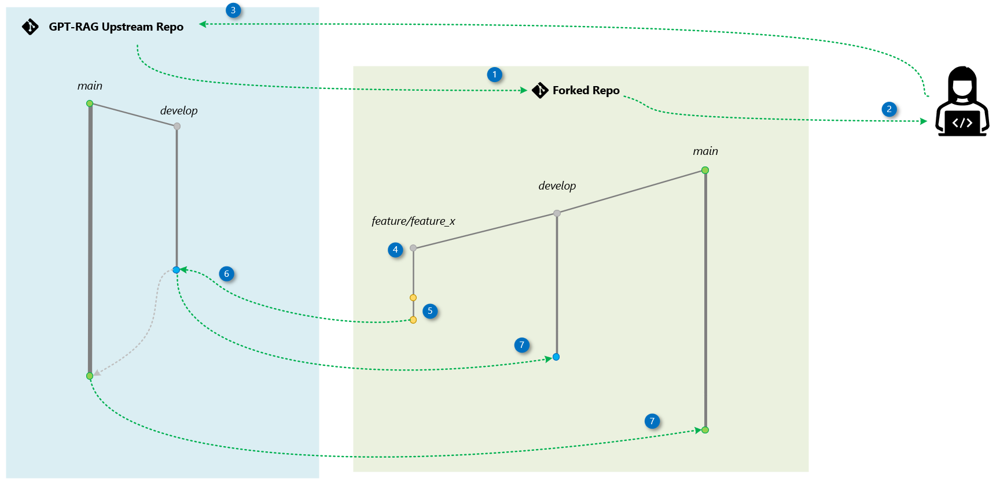

Contributing
We appreciate contributions and suggestions for this project! Before contributing, you'll need to sign a Contributor License Agreement (CLA) to confirm that you have the rights to, and do, grant us permission to use your contribution. More details can be found at Microsoft CLA.
This project adheres to the Microsoft Open Source Code of Conduct. For more information, please visit the Code of Conduct FAQ or contact opencode@microsoft.com with any questions or comments.
Below, you'll find details on how our code update process works and instructions on how to contribute.
ü§ù Contributors
Contributions include code, feedback, design ideas, documentation, and collaboration.
Ways to Contribute
- Issues: Report bugs, propose enhancements, or share feature requests.
- Comments: Engage in discussions, help others, and review proposals.
- Documentation: Improve guides and clarity for new users.
- Design: Contribute to open design discussions and new patterns.
- Tests: Strengthen reliability through unit and integration tests.
- Code: Submit fixes, enhancements, or new modules via pull requests.
Contribution Guidelines
To maintain project quality, the following items will be considered during the PR review.
Adhering to these best practices will streamline the review process.
-
Target the
developBranch: Always direct your pull request to thedevelopbranch to ensure that changes are properly integrated into the project's development workflow. -
Keep Pull Requests Small: Aim to make your pull requests as focused and concise as possible. This makes it easier to review and ensures quicker integration into the codebase.
-
Associate with Prioritized Issues: Ensure that each pull request is linked to a specific, prioritized issue in the project backlog. This helps maintain alignment with project goals and ensures that work is being done on tasks of the highest importance.
-
Include Documentation: Every new feature or functionality must be accompanied by clear documentation explaining its purpose and configuration. This ensures others can use it independently in a self-service manner.
-
Bugs and Documentation Corrections: Pull requests that address bugs or correct documentation do not need to be associated with prioritized issues. These can be submitted directly to maintain the quality and accuracy of the project.
-
Multi-Repo Dependencies: If your pull request has dependencies on updates in other repositories, make sure to mention this in the pull request description. Additionally, create a corresponding pull request in the other repository to ensure synchronized updates across all related projects.
Code Update Workflow
We use a simplified version of the Fork and Branch Workflow alongside Git Flow for branching strategy. The main branch always contains deployment-ready code, while the develop branch serves as our integration branch.
Contributors create feature branches from develop in their forks. Once changes are completed, they submit a pull request to the develop branch in the upstream repository. After review and approval, reviewers merge the changes into develop. Weekly, maintainers group these changes into a pull request from develop to main for final review and merging.
Process Overview
This section outlines the contribution process, highlighting the key actions for both contributors and maintainers. The accompanying diagram visually represents the workflow.

1) Fork the Repository
Create a copy of the GPT-RAG upstream repository under your own GitHub account.
2) Clone Locally
Download your forked repository to your local machine.
3) Add Upstream
Link the original GPT-RAG upstream repository as upstream to keep your fork synchronized.
4) Create a Feature Branch
From your fork’s develop branch, create a feature branch for your change (e.g., feature/feature_x).
5) Commit and Push Changes
Implement your updates locally, commit, and push them to your fork on GitHub.
6) Open and Merge the Pull Request to develop
Open a PR from your feature branch in your fork to the upstream repository’s develop branch.
7) Sync with Upstream develop
After your PR is merged, update your fork's develop branch with the latest changes from the upstream.
8) Create a Release Branch (Maintainers)
When the develop branch is ready for release, create a branch named release/x.y.z from your fork's develop. This branch will be tested and validated before merging to main.
9) Open a Pull Request to Upstream main (Maintainers)
Once the release is validated, open a PR from your release branch to the upstream main. After the merge, maintainers will create a version tag (e.g., v2.0.1).
10) Sync Your Fork
Finally, update both your fork’s main and develop branches to reflect the latest upstream state.
Step-by-Step
Here’s an example of implementing a feature called conversation-metadata in the gpt-rag-orchestrator repository.
1) Create a Fork
bash
https://github.com/placerda/gpt-rag-orchestrator.git
2) Clone Your Fork Locally
bash
git clone https://github.com/placerda/gpt-rag-orchestrator.git
3) Set Upstream Remote
bash
git remote add upstream git@github.com:Azure/gpt-rag-orchestrator.git
4) Create a Feature Branch
bash
git checkout -b feature/conversation-metadata develop
5) Make and Push Your Changes
bash
git add .
git commit -m "Implemented conversation metadata"
git push origin feature/conversation-metadata
6) Open and Merge the Pull Request to develop
- 6a. Create the PR:
Go to your fork on GitHub → click New Pull Request →
Base:
Azure/gpt-rag-orchestrator→developCompare:placerda/gpt-rag-orchestrator→feature/conversation-metadata - 6b. Maintainer Review:
The maintainers will review, request changes if needed, and merge the PR into the upstream
develop.
7) Sync Your Fork’s develop
bash
git fetch upstream
git checkout develop
git merge upstream/develop
git push origin develop
8) Create a Release Branch (Maintainers)
bash
git checkout -b release/2.0.1 develop
git push origin release/2.0.1
9) Open a Pull Request to Upstream main (Maintainers)
- Base:
Azure/gpt-rag-orchestrator→main - Compare:
placerda/gpt-rag-orchestrator→release/2.0.1 - After review and merge, maintainers tag the release (e.g.,
v2.0.1).
10) Sync Your Fork After Tag Creation
git fetch upstream
git checkout main
git merge upstream/main
git push origin main